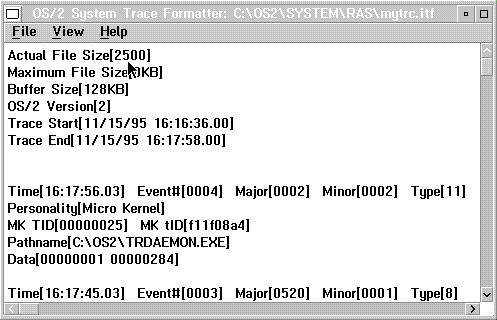

Menu-Bar Choices
The pull-downs available within the trace formatter are:
Trace Format

File
Use this pull-down to select a trace file to
viewed and what to do to the contents:
Open
Used to select a .TRC file to view;
Save
unformatted
Used to save unformatted trace data
to a file usually with the file extension of .itf. The .itf file can be
reloaded into the trace formatter.
Save formatted
Used to save the contents to a text file (with the
extension .FTF for Formatted Trace File). This data can be viewed with
an editor such as the system editor.
Print Setup
Used to select the output destination of formatted
data when you select the Print option. Output can go to either a
printer or a file; check the corresponding box to choose the destination.
Select a printer name from the drop-down choices or type a file name directly
into the field.
Print
Used
to send the currently formatted data to the destination selected in the
Printer Setup option.
Recapture buffer
Recaptures
the current trace buffer and refreshes the display.
Set
.TFF search path
Set where to look for .TFF trace
formatting files to use when you format trace data.
Exit
Ends the trace formatter program.
View
Allows you to change the view of the trace file
contents:
Select
Allows a combination of criteria to be selected.
You can choose the trace contents important to viewing; this is similar
to the SYSLOG Search function as shown in Search
Choice. You select the following items in various combinations:
- Major codes
- Minor codes
- Event number
- Process ID
- Time and date
The search
combination allows you to build search selections by adding, deleting, or
changing conditions before you start the search. In addition, you can save
the search values for reuse. The system refreshes the window with the selected
contents.
Display all events
Cancels
the previous Select or summary display and shows all contents.
Display
summary by Process ID
Displays a sorted listing
by process ID
Display summary by Major Code
Displays
a sorted listing by major code
Find
Allows
you to search for any particular text in the displayed contents.
Repeat
find
Repeats the search for the string of text.
Mark all
Marks all the
text being displayed so you can then copy the text to the clipboard.
Copy
Copy the selected text contents to the clipboard.
You cannot paste from the clipboard to the trace formatter.
Fonts
Select the font used to display formatted data.
Help